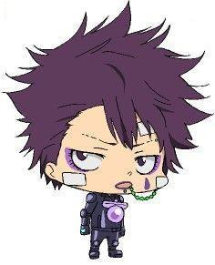

| Skull (史卡魯) |
| スカル, Sukaru |
|  |
| Biographical information |
| Age |
2 |
| Birthday |
August 8 |
| Physical description |
| Gender |
Male |
| Height |
38 cm |
| Weight |
4 kg |
| Blood type |
B |
Underground information |
| Flame |
Cloud Flame |
As head of the combat forces of the Carcassa Famiglia, he wears a full leather outfit and a large white motorcycle helmet; a similar uniform is worn by his subordinates. The helmet is equipped with a green visor and decorated with a picture of his animal partner, a giant armored octopus named Oodako whose tentacles follow his hand and finger movements. In both his Arcobaleno and adult forms, he wears eyeliner and has a teardrop-shaped tattoo under his left eye. He also wears lipstick. By his own admission, his adult form is a "pretty-boy hottie" and "seven heads tall".
.